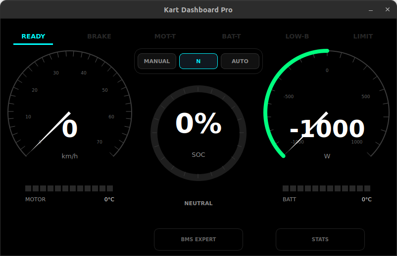
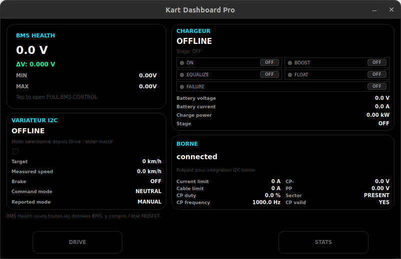
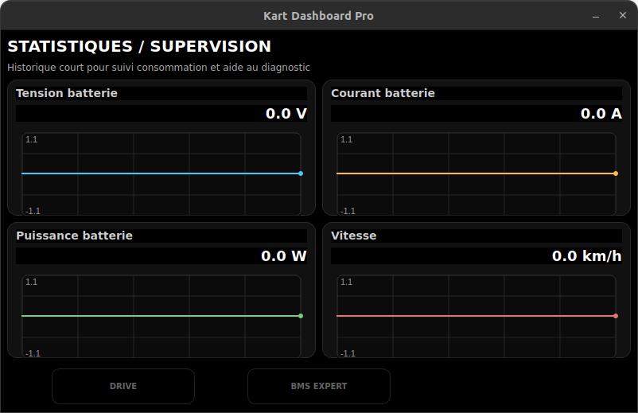
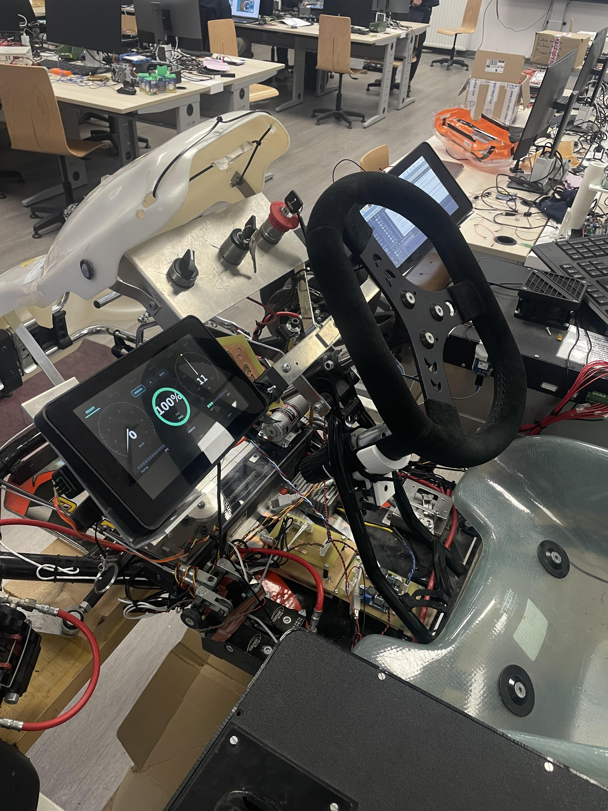

Collection — Troisieme annee ESE
BUT3 — interfaces embarquees et drone
Derniere annee de BUT GEII articulee autour de deux axes : un projet SAE complet en Python / PyQt6 pour systeme embarque, et un stage de 14 semaines au sein du laboratoire LIST3N de l'UTT sur le projet ARODE.
Kart Dashboard Pro V3




Application Python / PyQt6 concue pour un Raspberry Pi 4, destinee a afficher des donnees vehicule en temps reel depuis les capteurs du kart. L'architecture separe strictement les responsabilites en 4 couches, ce qui permet a la fois un fonctionnement robuste sur materiel et un developpement sans kart grace au mode simulation.
Le projet met en avant une interface claire, des services non bloquants, un mode simulation pour developper sans materiel et une structure propre pour connecter les donnees vehicule.
Architecture
4 couches pour un systeme embarque fiable
1 — Hardware / Service
Encapsule l'acces aux peripheriques physiques (I2C, USB). Utilise QThread pour lire les capteurs hors du thread UI, evitant tout gel de l'interface. Publie des donnees normalisees vers le StateStore.
2 — Simulation (MockService)
Reproduit le comportement des capteurs sans materiel connecte. Meme contrat d'interface que les vrais services — remplacement transparent. Permet de developper, tester et demontrer sans kart.
3 — Core (StateStore)
Source de verite unique du systeme. Recoit les donnees des services, valide, agregge et diffuse les changements via pyqtSignal. Les consommateurs s'abonnent : pas d'acces direct aux services.
4 — Interface utilisateur (UI)
Entierement decouple de l'acquisition. Ne lit pas les capteurs, ne contient pas de logique d'acquisition. Se contente de dessiner l'etat publie par le Store — interface stable et facile a faire evoluer.
Flux de donnees
Ce modele garantit un temps reel robuste (I/O hors thread UI), un developpement accelere (simulation sans materiel), une coherence fonctionnelle (etat centralise) et une modularite (UI decouple et remplacable).
Projet ARODE — architecture drone ouverte

- OrganismeUniversite de Technologie de Troyes — LIST3N
- TuteurPr Hichem SNOUSSI — Directeur adjoint LIST3N
- Periode16 mars → 19 juin 2026 (14 semaines)
- SujetEtude et mise en place d'une architecture drone ouverte pour l'aide aux services de secours
Le projet ARODE existait avant mon arrivee. Mon stage ne porte pas sur la creation complete d'ARODE mais sur une contribution ciblee : architecture drone X500, solution de secours Mavic 2 Pro, tests de modeles de detection et ajustements ARODE Live.
Architecture drone ouverte (axe principal)
Etude et implantation d'une plateforme X500 V2 — chassis, Pixhawk, Jetson Orin Nano, SIYI, alimentation FCHUB, ESC, moteurs T-Motor. Objectif : remplacer progressivement une source DJI commerciale limitee et preparer le traitement embarque.
Solution de secours Mavic 2 Pro
Mise en place d'un DJI Mavic 2 Pro pour fiabiliser les demonstrations live du projet face a des personnes exterieures, pendant que le X500 est en cours d'integration. Tests flux video, GPS/metadonnees, exports CSV, affichage d'alarmes dans ARODE Live.
Tests de modeles de detection fine-tunes
Evaluation de YOLO, DEIM/DEIMv2 et RT-DETR dans la chaine complete ARODE — pas seulement leur performance isolee. Criteres : qualite des detections, stabilite, vitesse d'inference, format des sorties, synchronisation GPS, affichage dans l'interface.
Donnees synthetiques et VLM (exploratoire)
Exploration de la generation de donnees synthetiques (FLUX Fill, LaMa, SAM2, LoRA) pour ameliorer l'entrainement du VLM. Piste non finalisee : limites identifiees sur le realisme terrain, la perspective, les masques et le cout GPU.